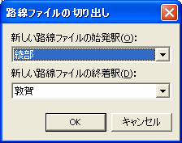

現在編集している路線ファイルから、一部駅間の列車のみを保持した路線ファイルを作成することができます。
(1) [駅ビュー]を開いた状態で、メニュー[ファイル]-[路線ファイルの組入れ/切り出し]-[路線ファイルの切り出し]を選択してください。
→[路線ファイルの切り出し]ダイアログが開きます。
(2)[路線ファイルの切り出し]ダイアログ

駅間とファイル名を指定して、[OK]を押してください。
→[名前を付けて保存]ダイアログが開きます。
(3) [名前を付けて保存]ダイアログで、ファイル名を指定してください。
→一部駅間の路線ファイルの作成処理が行われます。
(1) 新しく生成される路線ファイルは、『現在編集している路線ファイル』から、指定された範囲以外の駅を削除したものになります。
(2) 新しく生成される路線が運転区間に含まれない列車は、削除します。